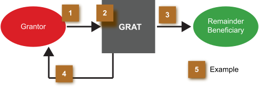

As illustrated in the Family Limited Partnership case study, discounted values can be quite useful in facilitating intra-family transfers. Another technique that can be helpful in making transfers at discounted gift tax valuations is a Grantor Retained Annuity Trust (GRAT). A Grantor Retained Annuity Trust (GRAT) is a technique where the grantor (donor) transfers property (or other assets) into an irrevocable trust which, in turn, will provide the grantor with a cash annuity payment for a pre-determined period of time. Once the annuity obligation to the grantor has been fulfilled, the beneficiaries of the trust will receive the balance that is remaining in the trust.
The key advantages of using a GRAT are:
Here is how a GRAT works: Click each numbered bullet sequentially to learn more.
